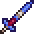
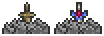

Зачарованный меч
Характеристики
Тип Оружие Меч
Урон 23

Скорость 21 (Быстрая)
Атак/сек 2.9
Крит. шанс 4%
Отбрасывание 4.25 (среднее)
Редкость Зеленая
Продажа 3

Лучшая модификация Легендарный
Кол-во исследований 1 исследование
Зачарованный меч (Enchanted Sword) — меч, добавленный в версии 1.2. До версии 1.3 можно найти в любом месте карты. С версии 1.3 его можно найти в святыне зачарованного меча, которую можно распознать по тонкой расщелине (1, иногда 2 блока), неглубоко от поверхности в виде разрушаемого объекта, похожего на камень, из которого торчит рукоять меча . С версии 1.3 вместо зачарованного меча в камне может находиться Аркалис (с версии 1.4 вместо Аркалиса будет Террагрим). С версии 1.4 этот меч можно достать из титанового ящика и золотого ящика с шансом 2%, для возможности получения Зенита ресурсами одного мира.
При атаке излучает свет и стреляет зачарованными мечами, наносящими урон, равный урону самого меча. Снаряды восстанавливаются каждую секунду, однако мечом можно пользоваться и без перезарядки выстрелов.